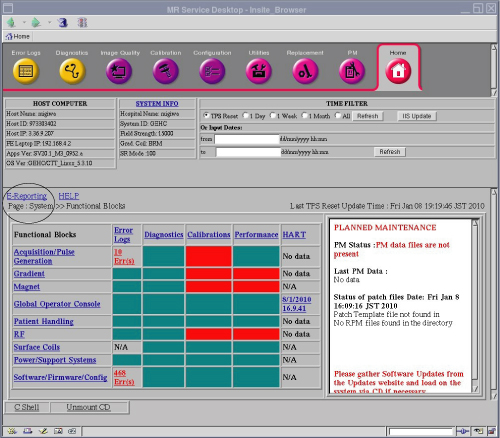
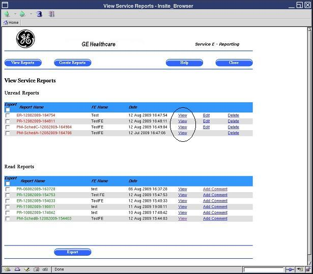
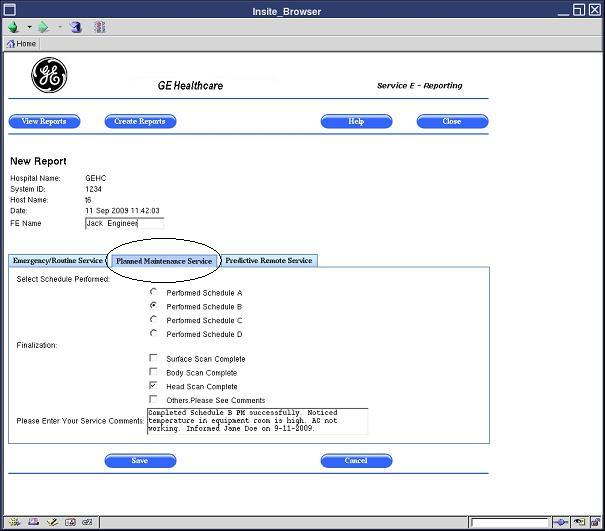
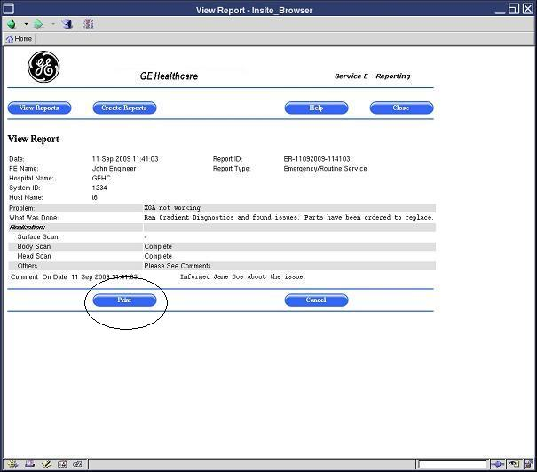
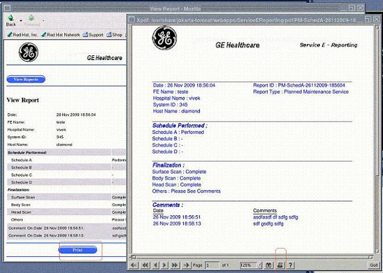
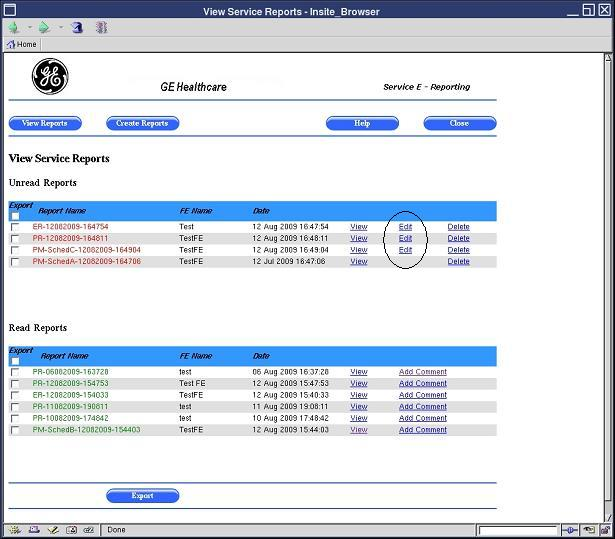
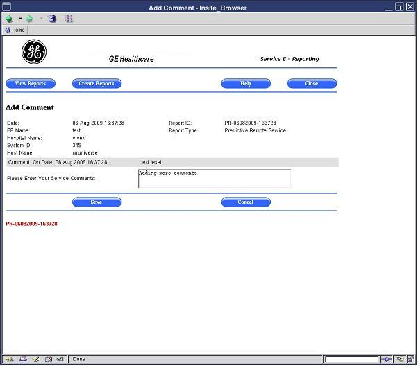
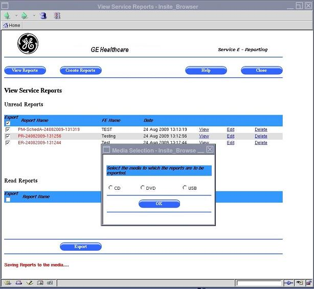

Operating Documentation
Direction 5500113, Rev# 3
Discovery MR450 1.5T Service Methods
Module Version 2.0, Version Date 12/9/09
Operating Documentation |
| Required Persons | Preliminary Reqs | Procedure | Finalization |
|---|---|---|---|
| 1 | Not Applicable | Not Applicable | Not Applicable |
This document only covers features and access for the Field Engineer and Online Engineer. For operator access to this tool, please refer to the Operator Manual.
The E-Reporting Tool is a web-based application that allows for better communication between the customer and the GE service engineer. Communication is one-way with this tool from the service engineer to the customer. When a Field Engineer (FE) or Online Engineer (OLE) provides service at a customer site, the E-Reporting Tool is used to document issues found or service performed. It is also used to provide recommendations for customer follow-up, for example, suggesting that the customer improve room temperature. After the service engineer has created a service report, the customer can view and print the report at any time.
There are three types of reports in the E-Reporting Tool:
Emergency and Routine Service Report - (The Field Engineer primarily uses this page to communicate to the customer any information from emergency or routine service calls.) This report is created, for example, when an FE or OLE is called onsite to resolve an emergency site issue and wants to maintain a log of the discussion that occurred between site personnel and the engineer. The service engineer is also able to communicate with the customer about work that was done after hours at that site.
Planned Maintenance Service Report - (The Field Engineer primarily uses this page to communicate to the customer any PM information from planned maintenance service calls.) An FE or OLE may create this report to communicate to site personnel about the details of planned maintenance that was performed onsite by GE. The report could also contain any site-related issues that the customer should correct or that GE needs to fix.
Predictive Maintenance Service Report - (The OnLine Center primarily uses this page to communicate to the customer any information from predictive maintenance service calls.) This report may be created by an FE or OLE when performing proactive work to remedy a problem that will occur onsite if site conditions are not corrected. This may involve site-related issues that could impact product performance. Examples include temperature and humidity that is out of specification, or MCQA results that indicate a problem with site coils.
| ||||
| When creating or modifying a service report, make sure to state the facts -- not opinions or hypothesis -- about the service call and customer follow-up. | ||||
In addition to viewing service reports, these reports can be exported to media, such as DVD, CD, or USB drive. Each service report includes the hospital name, system ID, system name, and the date it was generated. Service reports for the last three years are maintained on the system. Reports older than three years are automatically deleted.
Insert the Service Key in the host computer USB port (this applies to the FE or OLE, not the customer). The service key is needed to access the MR Service Desktop Browser.
Click [Service Desktop Manager] and select [Service Browser] from the Service Desktop Manager window. The Common Service Desktop home page opens. This home page (see Illustration 1) is the FE Cockpit top-level page.
Illustration 1: FE Cockpit Home Page

Click the E-Reporting link on the FE Cockpit Home Page (see Illustration 1). The E-Reporting View Service Reports page is displayed (see Illustration 2).
Illustration 2: View Service Reports Page

By default, the E-Reporting View Service Reports page is displayed for the Field Engineer or Online Engineer with several options for viewing, editing, deleting, and creating reports.
When the E-Reporting Tool is opened, a list of reports automatically displays (for reports that were already created).
Open the View Service Reports page (see Opening the E-Reporting Tool).
A list of Unread reports is shown at the top of the page, and a list of Read reports is shown at the bottom of the page. When a service engineer creates a report, it goes to the Unread list. When a customer opens the report, it moves to the Read list (see Illustration 2).
A service engineer can view a particular report by clicking the View link for that report.
Open the View Service Reports page (see Opening the E-Reporting Tool).
Click the View link for the report you want to view (see Illustration 3). The corresponding report is displayed (see Illustration 4).
Illustration 3: Selecting the View Link

Illustration 4: Viewing a Service Report

| NOTE: | To return to the list of reports, click the [View Reports] button at the top of the page. You can also go back to the list of reports by clicking the [Cancel] button. |
To create each of the three service reports, see the procedures below.
A service engineer can create an Emergency/Routine Service Report. This report contains the information shown in Illustration 5.
Open the View Service Reports page (see Opening the E-Reporting Tool).
Click the [Create Reports] button at the top of the page (see Illustration 5).
Illustration 5: Selecting the Create Reports Button

Click the [Emergency/Routine Service] tab to create this type of report (this tab is the default so it may already be selected, as shown in Illustration 6).
Illustration 6: Creating an Emergency/Routine Service Report

Enter the following information for the report:
Problem
What was done
Finalization
Service comments
Click the [Save] button at the bottom of the page.
A service engineer can create a Planned Maintenance Service Report. This report contains the information shown in Illustration 7.
Illustration 7: Planned Maintenance Service Report

Open the View Service Reports page (see Opening the E-Reporting Tool).
Click the [Create Reports] button at the top of the page ( see Illustration 5).
Click the [Planned Maintenance] tab to create this type of report (see Illustration 7).
Enter the following information for the report:
Schedule performed
Finalization
Service comments
Click the [Save] button at the bottom of the page.
A service engineer can create a Predictive Maintenance Service Report. This report contains the information shown in Illustration 8.
Illustration 8: Predictive Maintenance Service Report

Open the View Service Reports page (see Opening the E-Reporting Tool).
Click the [Create Reports] button at the top of the page (see Illustration 5).
Click the [Predictive Remote Service] tab to create this type of report (see Illustration 8).
Enter service comments for the report.
Click the [Save] button at the bottom of the page.
A service engineer can print a specific report by opening it and printing it. The service report is displayed as a PDF file for printing purposes. The report is printed using either the:
XPDF tool on the local system, which is a Linux version of PDF, or
Adobe Acrobat when accessed remotely through the Integrated Service Desktop (ISD)
| NOTE: | To print a service report, a network printer needs to be configured on the scanner. This printer must be set up to print from Adobe Acrobat, Adobe Reader, or a similar PDF program. |
Open the View Service Reports page (see Opening the E-Reporting Tool).
Click the View link for the report you want to print (see Illustration 9). The corresponding report is displayed in the View Report page (see Illustration 10).
Illustration 9: Viewing a Service Report in Order to Print It
Click the Print button at the bottom of the View Report page (see Illustration 10).
Illustration 10: Printing a Service Report

If you print locally from the system, an XPDF page displays (see Illustration 11 ). Click the Printer icon in the toolbar at the bottom of the XPDF page to print.
Illustration 11: Printing Locally with the XPDF Tool

If you print remotely from the Integrated Service Desktop (IDS), an Adobe Acrobat page or similar PDF reader program displays (see Illustration 12 and Illustration 13). To print:
Click the Print icon in the toolbar at the top of the page, or select File>Print from the menu bar at the top of the page. A Print Dialog box displays.
Click [OK] in the Print Dialog box.
Illustration 12: Printing Remotely with Adobe Acrobat - Using the Print Icon

Illustration 13: Printing Remotely with Adobe Acrobat - Using the Print Menu

A service engineer can edit a specific report by clicking the Edit link for that report. An FE can edit only an unread report.
| ||||
| Make sure to state the facts, not hypothesis, when editing a report. | ||||
Open the View Service Reports page (see Opening the E-Reporting Tool).
Click the Edit link for the report you want to edit (see Illustration 14). The corresponding report opens (see Illustration 15).
Illustration 14: Selecting the Edit Link

Illustration 15: Editing a Service Report

Enter your changes in the report.
Click the [Save] button at the bottom of the page.
A service engineer can add comments to a specific report by clicking the Add Comments link for that report. An FE can only add comments to a read report. After adding the comments, the report is moved to the "Unread" section.
| ||||
| Make sure to state the facts, not hypothesis, when adding comments to a report. | ||||
Open the View Service Reports page (see Opening the E-Reporting Tool).
Click the Add Comments link for the report to which you are adding comments (see Illustration 16). The corresponding report opens (see Illustration 17).
Illustration 16: Selecting the Add Comments Link

Illustration 17: Adding Comments to a Service Report

In the Comments box, type comments.
Click the [Save] button at the bottom of the page.
A service engineer can export a report to media, such CD, DVD, or USB drive. The report is exported as a PDF file.
Open the View Service Reports page (see Opening the E-Reporting Tool).
Click the check box for the report you want to export (see Illustration 18). Placing a check mark in the check box will select the report.
Illustration 18: Selecting the Export Check Box

Insert the CD, DVD, or USB to which you are exporting the report. Make sure to insert the media in the proper port/drive for the computer.
Click the [Export] button at the bottom of the page (see Illustration 18).
A media selection dialog box is displayed, with selections for CD, DVD, or USB (see Illustration 19).
Illustration 19: Selecting the Media for Export

Select the type of media to which you are exporting the report, such as CD.
Click [OK].
A service engineer can delete a specific report by clicking the Delete link for that report. An FE can delete only an unread report.
Open the View Service Reports page (see Opening the E-Reporting Tool).
Click the Delete link for the report you want to delete (see Illustration 20).
Illustration 20: Selecting the Delete Link

A dialog box is displayed, asking “Do you want to Delete this report?”
Click [OK] .
No finalization steps.